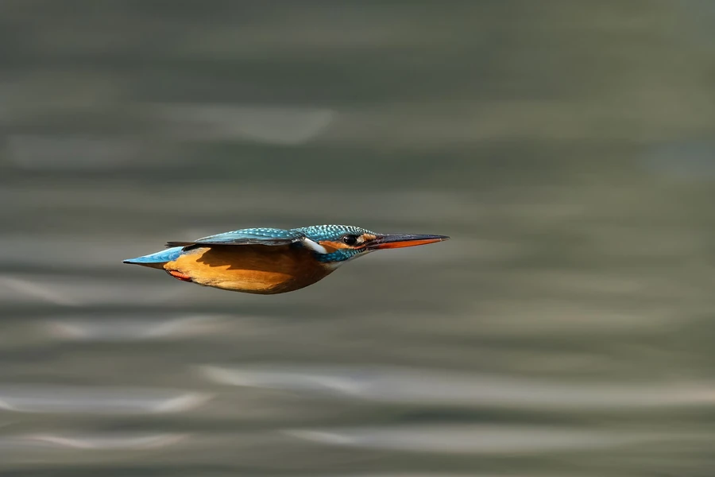

Lentävä kuningaskalastaja
Kuningaskalastaja lentää matalalla siivet tiiviisti vartalon lähellä. Sininen selkä ja oranssi vatsapuoli erottuvat pehmeäksi sumentuneesta taustasta.
Tekijä: Prasan Shrestha
Kuvauspaikka: Taudaha-järvi, Kirtipur, Nepal
Kuvauspäivä:
Alkuperäinen kuva – Wikimedia Commons* CC BY-SA 4.0 – Nimeä-JaaSamoin 4.0 Kansainvälinen · Rajattu 3:2, pienennetty ja muunnettu WebP-muotoon. Galleriaversio samalla lisenssillä.